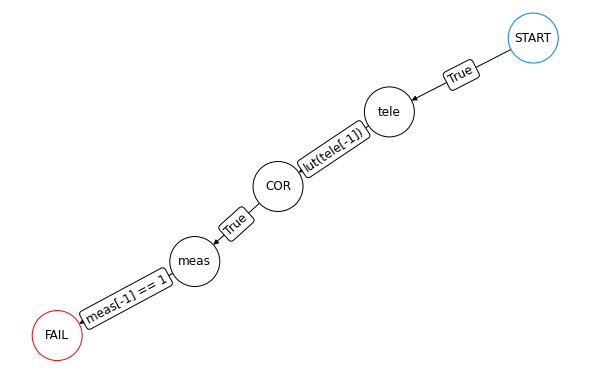
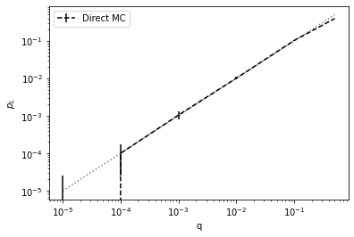
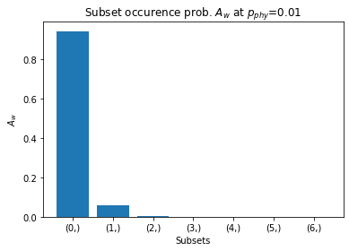
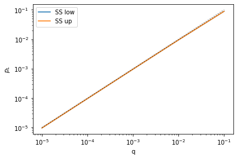
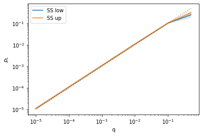
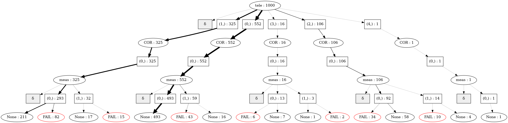
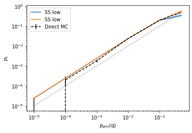

import qsample as qs
import matplotlib.pyplot as plt # for visualization of resultsqsample
Efficient sampling of noisy quantum circuits and protocols
Install
pip install qsamplePrerequisites
- python3
- pdflatex (for circuit rendering)
When to use
- For QEC protocols with in-sequence measurements and feed-forward of measurement information
- Apply circuit-level incoherent Pauli noise at low physical error rates (i.e. high fidelity physical operations)
- Simulate and sample protocol execution over ranges of varying physical error rates, using customizable callbacks
Getting started
First, we need to define a quantum protocol of which we would like to know the logical error rate. In qsample a protocol is represented as a graph of quantum Circuits as nodes and boolean transition checks between them. Each check is evaluated at runtime to determined the next circuit to choose, thus simulation of non-deterministic protocols is possible.
As an example, let’s sample the logical error rates of an error-corrected quantum state teleportation protocol. We define the teleportation circuit teleport which sends the state of the first qubit, here \(|0\rangle\), to the third qubit. Additionally, we want to use measurements of first and second qubit at the end of the circuit to drive a correction on qubit 3 before we measure it.
teleport = qs.Circuit([{"init": {0, 1, 2}},
{"H": {1}},
{"CNOT": {(1, 2)}},
{"CNOT": {(0, 1)}},
{"H": {0}},
{"measure": {0, 1}}])
teleport.draw()Thus, we also need a circuit to measure the third qubit to verify if the teleportation was successful. If the outcome of this measurement is 0 (corresponding to the initially prepared \(|0\rangle\) state of qubit 1, the teleportation succeded. If the outcome is 1 it (logically) failed. Let’s additionally assume there is some noise on the measurement readout.
meas = qs.Circuit([{"measure": {2}}], noisy=True)Between the teleport and meas circuits apply a correction to qubit 3 conditioned on the measurement outcomes (of qubits 1 and 2) of the teleportation circuit. We map each possible measurement outcome (integer representation of bit string in order of measurement) to a corresponding correction on qubit 3 by defining the lookup function lut. We assume the correction itself to be noiseless here.
def lut(syn):
op = {0: 'I', 1: 'X', 2: 'Z', 3: 'Y'}[syn]
return qs.Circuit([{op: {2}}], noisy=False)Finally, define the circuit sequence and transition logic together within a Protocol object. Note that protocols must always commence with a unique START node and terminate at a (not necessarily unique) FAIL node, where the latter expresses a logical failure event.
tele_proto = qs.Protocol(check_functions={'lut': lut})
tele_proto.add_nodes_from(['tele', 'meas'], circuits=[teleport, meas])
tele_proto.add_edge('START', 'tele', check='True')
tele_proto.add_edge('tele', 'COR', check='lut(tele[-1])')
tele_proto.add_edge('COR', 'meas', check='True')
tele_proto.add_edge('meas', 'FAIL', check='meas[-1] == 1')
tele_proto.draw(figsize=(8,5))
Notice that we do not define any initial circuit for the correction COR but pass our lookup function to the check_functions dictionary, which makes it accessible inside the check transition statements between circuits. This way we can also dynamically inject correction circuits into the protocol at execution time.
After the protocol has been defined we can repeatedly execute (i.e. sample) it in the presence of incoherent noise. Let’s say we are interested in the logical error rates of all 1- and 2-qubit gates and measurements subject to physical errors with physical error rates \(p_{phy}=10^{-5}, \dots, 10^{-1}\), and \(0.5\). The corresponding noise model is called E1_1 in qsample. The groups of all 1- and 2-qubit gates and measurements are indexed by the key q in E1_1. Other noise models (and their parameters) are described in the documentation.
err_model = qs.noise.E1_1
err_params = {'q': [1e-5, 1e-4, 1e-3, 1e-2, 1e-1, 0.5]}We are ready to sample. As our protocol only contains Clifford gates let’s choose the StabilizerSimulator, as well as the PlotStats callback for plotting the resulting logical error rate as function of our chosen \(p_{phy}\). For now, let’s use our inefficient sampler, DirectSampler, which executes n_shots naive Monte Carlo samples at each physical error rate.
sam = qs.DirectSampler(protocol=tele_proto, simulator=qs.StabilizerSimulator, err_model=err_model, err_params=err_params)
sam.run(n_shots=20000, callbacks=[qs.callbacks.PlotStats()])
Notice, that at low error rates DirectSampler performs badly, i.e. the error bars become very large, as most of the time the protocol is executed error free and, consequently, logical errors are measured infrequently. In this regime it is much more efficient to use an importance sampling strategy to avoid fault-free protocol execution and instead put more emphasis on execution with at least one physical error, i.e. fault, happening. This approach is implemented in the SubsetSampler class. We only need to specify two additional parameters: p_max which specifies the \(p_{phy}\) at which sampling takes place, and L, the length of the longest possible fault-free path. We choose the parameter p_max experimentally by repeated sampling and observing which subsets have the largest impact on the failure rate. We always choose a value such that the subset occurence probability has an exponentially falling shape. Below we see that for the teleportation circuit p_max-values of 0.01 and 0.1 are still okay, while 0.3 could be problematic. For more information refer to https://arxiv.org/abs/2309.12774.
for p_phy in [0.01, 0.1, 0.3]:
Aws = qs.math.subset_probs(teleport, err_model(), p_phy)
plt.figure()
plt.title("Subset occurence prob. $A_w$ at $p_{phy}$=%.2f" % p_phy)
plt.bar(list(map(str,Aws.keys())), Aws.values())
plt.ylabel("$A_w$")
plt.xlabel("Subsets")


Let’s choose a \(p_{max}=0.1\) for the same error model as before and start sampling. (Note the significant difference in the number of samples).
ss_sam = qs.SubsetSampler(protocol=tele_proto, simulator=qs.StabilizerSimulator, p_max={'q': 0.1}, err_model=err_model, err_params=err_params, L=3)
ss_sam.run(1000, callbacks=[qs.callbacks.PlotStats()])
The sampling results are internally stored by the SubsetSampler in a Tree data structure. In the tree we can also see why we chose L=3, as there are three circuits in the fault-free path sequence.
ss_sam.tree.draw(verbose=True)
The leaf nodes FAIL and None represent logical failure and successful teleportation events, respectively. \(\delta\) represents the missing subsets which have not been sampled and which result in the upper bound on the failure rate.
Finally, let’s compare the results of DirectSampler and SubsetSampler.
p_L_low, std_low, p_L_up, std_up = ss_sam.stats()
p_L, std = sam.stats()
sample_range = err_params['q']
plt.errorbar(sample_range, p_L, fmt='--', c="black", yerr=std, label="Direct MC")
plt.loglog(sample_range, p_L_low, label='SS low')
plt.fill_between(sample_range, p_L_low - std_low, p_L_low + std_low, alpha=0.2)
plt.loglog(sample_range, p_L_up, label='SS low')
plt.fill_between(sample_range, p_L_up - std_up, p_L_up + std_up, alpha=0.2)
plt.plot(sample_range, sample_range,'k:', alpha=0.5)
plt.xlabel('$p_{phy}$(q)')
plt.ylabel('$p_L$')
plt.legend();
More things to explore
qsample.examplesshows more examples of protocol and protocol samplings.qsample.noisedefines more complex error models, as well as a superclassErrorModelwhich can be used to define custom error models.qsample.callbacksdefines more callbacks, as well as the superclassCallbackwhich allows for the implementation of custom callbacks.
Contribute
- Feel free to submit your feature request via github issues
Cite as
@misc{qsample,
author = {Winter, Don and Heu{\ss}en, Sascha},
title = {qsample},
year = {2023},
publisher = {GitHub},
journal = {GitHub repository},
howpublished = {\url{https://github.com/dpwinter/qsample}}
}and
@article{heussen2024dynamical,
title = {Dynamical subset sampling of quantum error-correcting protocols},
author = {Heu{\ss}en, Sascha and Winter, Don and Rispler, Manuel and M\"uller, Markus},
journal = {Physical Review Research},
volume = {6},
issue = {1},
pages = {013177},
year = {2024},
doi = {10.1103/PhysRevResearch.6.013177},
url = {https://link.aps.org/doi/10.1103/PhysRevResearch.6.013177}
}Team
qsample was developed by Don Winter in collaboration with Sascha Heußen under supervision of Manuel Rispler and Markus Müller.